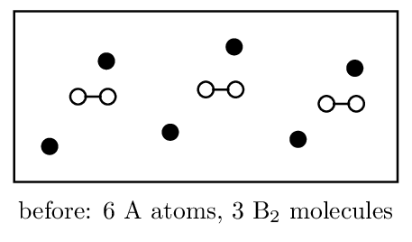

Directions & data
Every particulate drawing must conserve atoms and charge. Label
what your circles represent — an unlabelled diagram earns nothing.
1. Classify each as physical or chemical change and give the
particle-level reason:
- Water boiling: physical — \(\ce{H2O}\) molecules separate
- Copper turning green outdoors: chemical — new carbonate compound
- Sugar dissolving in tea: physical — molecules disperse intact
- Baking soda fizzing in vinegar: chemical — \(\ce{CO2}\) gas produced
2. Dissolving \(\ce{NaCl}\) is classified as a physical change, yet
ionic bonds are disrupted. Reconcile these two statements.
3. A student mixes two clear solutions; the mixture becomes
warm and slightly cloudy.
- Name two pieces of evidence suggesting a chemical reaction.
- Give one alternative explanation for each observation that does not require a chemical reaction.
- What single additional test would most strengthen the claim?
4. The box below shows a mixture before reaction. Filled circles
are \(\ce{A}\) atoms; open circles joined in pairs are \(\ce{B2}\) molecules.

- The reaction is \(\ce{2 A + B2 -> 2 AB}\). How many \(\ce{AB}\) units form? 6
- Which reactant is limiting? neither — exact ratio
- Draw the “after” box.
6 \(\ce{AB}\) units (one filled bonded to one open), nothing left over. Atom check: 6 A and 6 B before and after.
5. Draw the particulate representation of what is present when
\(\ce{K2SO4(s)}\) dissolves in water. Show 3 formula units' worth and label your
symbols; omit water molecules but say so.
6 separate \(\ce{K+}\) and 3 separate \(\ce{SO4^2-}\),
randomly distributed, never drawn as bonded \(\ce{K2SO4}\) units. Caption:
“water omitted for clarity.”
6. A student's “after” diagram for
\(\ce{AgNO3(aq) + NaCl(aq) -> AgCl(s) + NaNO3(aq)}\) shows scattered \(\ce{Ag+}\)
and \(\ce{Cl-}\) ions plus bonded \(\ce{NaNO3}\) pairs. Identify both errors.
Spiral review • Units 1–3 • spiral
- Strongest IMF in \(\ce{CH3OH}\): hydrogen bonding
- Shape of \(\ce{NH3}\): trigonal pyramidal
- \(PV/nRT<1\) is caused by: attractions
- PES areas 2:2:6:1 — element? Na
- Moles in 9.0 g \(\ce{H2O}\): 0.50 mol